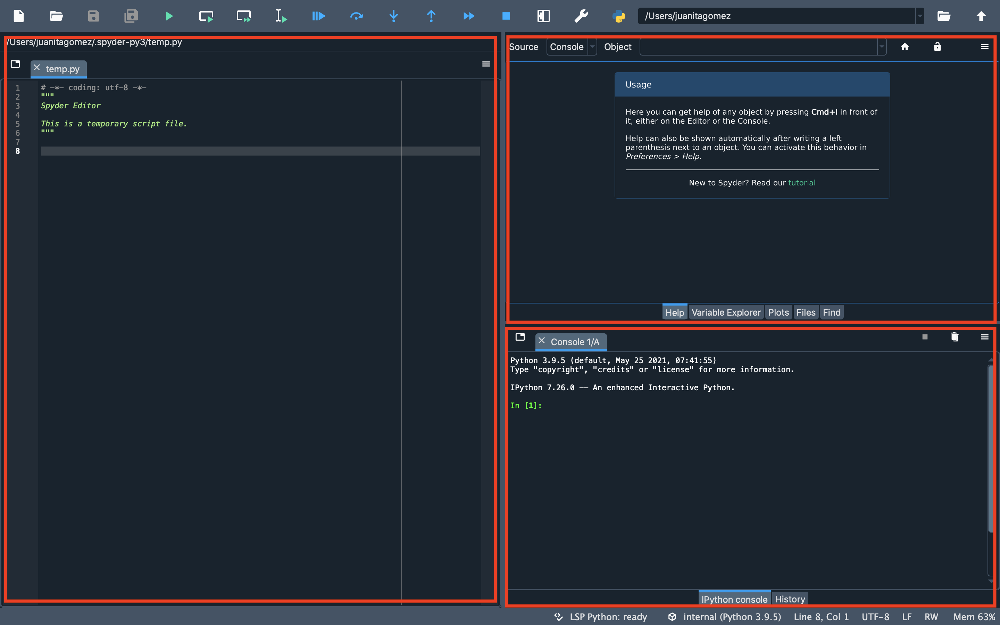
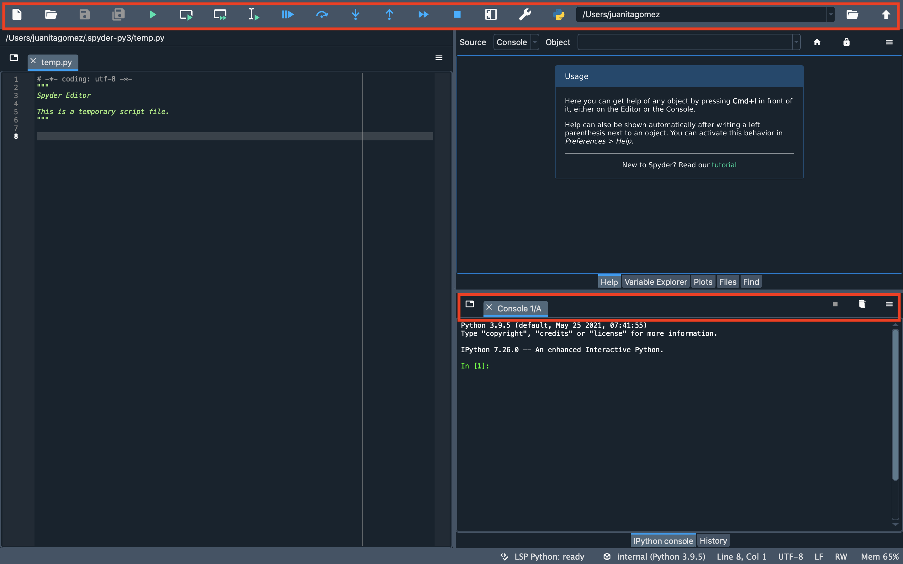
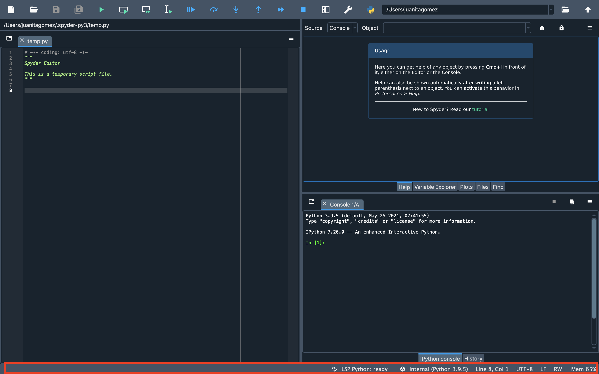
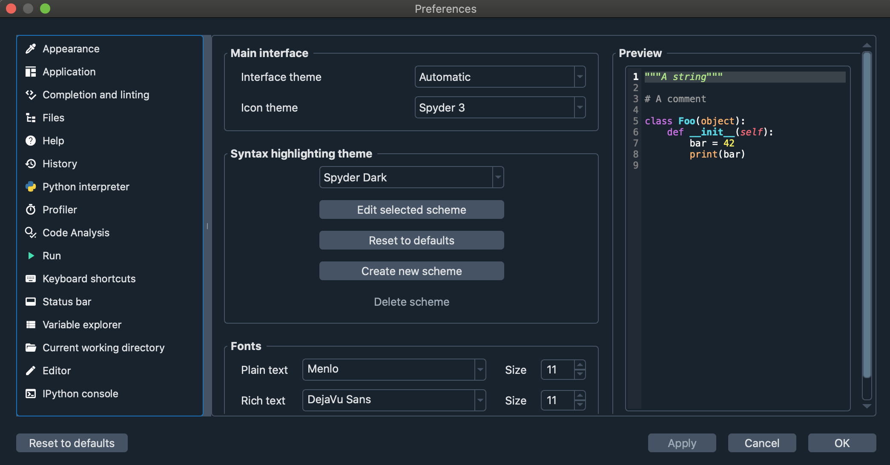

Terminology#
We provide a glossary of elements that you will find around Spyder’s interface in order for you to get familiar with terminology around documentation.
Application#
User program which comprehends plugins, widgets, toolbars and other UI elements.
Main Window#
Graphic representation of the application. It is what users see by default when the application is launched.
Panes#
Rectangular sections in which the Spyder’s interface is divided. These include the Editor, IPython Console, Help, etc…

Toolbars#
Graphical control with buttons that allow several actions throughout the interface.
In Spyder, there is main toolbar at the top of the application and several toolbars in each pane.

Status bar#
One of Spyder’s toolbars, located at the bottom of the application which displays information about current Python environment, git branch, memory usage and various attributes of the currently active file.

Plugin#
A piece of software code that enables an application to perform an specific function. In Spyder, plugins are toolbars, menus, status bar widgets, custom and preferences dialogs.
Widget#
Separated graphical elements that are handled by plugins to extend its functionality.
Preferences#
Options provided by the application to customize several functions or panes.

Tests#
Program that allows finding errors within an application.
Dependencies#
Specific library that perform specific tasks within an application.
Utils#
Functions that allow the application to run processes that don’t require graphical elements.